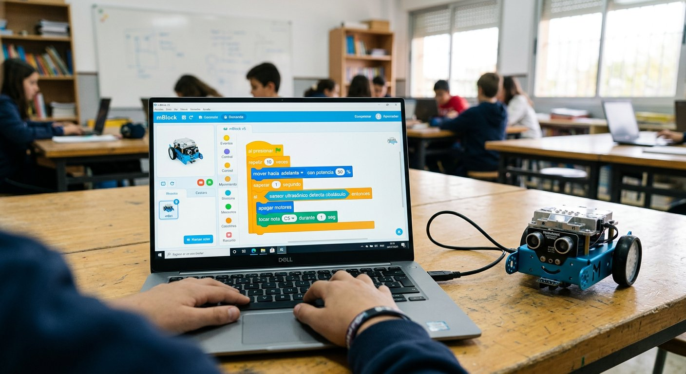

Qué cubre esta guía
- Qué es la programación por bloques y por qué empezar con ella
- mBlock, Scratch, MakeCode y Snap4Arduino
- Instalar mBlock y conectar tu Arduino
- Modo en vivo vs. cargar el programa
- Primer programa: LED parpadeante paso a paso
- Leer sensores con bloques
- Controlar motores y servos
- Ver el código generado: el puente al texto
- Actividad de aula sugerida
- Limitaciones y transición al Arduino IDE
- Preguntas frecuentes
Qué es la programación por bloques y por qué empezar con ella
La programación por bloques presenta las instrucciones como piezas visuales que se arrastran y encajan, de modo que un programa se arma como un rompecabezas en lugar de escribirse como texto. Cada bloque tiene una forma que solo calza con las piezas compatibles, lo que elimina de raíz la mayoría de los errores de sintaxis que frustran a quien recién empieza: paréntesis mal cerrados, puntos y coma olvidados o mayúsculas mal puestas.
Para enseñar Arduino, esta abstracción tiene un valor pedagógico enorme: el estudiante se concentra en la lógica —secuencias, bucles, condicionales, variables— sin la distracción de la sintaxis. Los conceptos que se aprenden con bloques son exactamente los mismos que se necesitarán después en código textual, lo que convierte a los bloques en una rampa de acceso y no en un callejón sin salida.
- Retroalimentación inmediata: se arrastra un bloque, se ejecuta y se ve el resultado al instante.
- Menos frustración: los errores de lógica se detectan observando el comportamiento, sin mensajes de compilación crípticos.
- Accesibilidad: permite que estudiantes de 8 años en adelante programen hardware real el primer día.
- Puente al texto: herramientas como mBlock muestran el código generado, preparando la transición al Arduino IDE.
mBlock, Scratch, MakeCode y Snap4Arduino
| Entorno | Soporte Arduino | Modo en vivo | Ver código generado | Ideal para |
|---|---|---|---|---|
| mBlock (Makeblock) | Nativo y completo | Sí | Sí (Python / Arduino) | Arduino y robots mBot en el aula |
| Scratch 3 + extensión | Mediante extensión de hardware | Sí | No | Introducción general y animaciones |
| MakeCode (Microsoft) | No directo (micro:bit, otras placas) | Simulador en navegador | Sí (Python / JS) | micro:bit y placas soportadas |
| Snap4Arduino | Sí | Sí | No | Alternativa web ligera |
Para un taller centrado en Arduino, mBlock es la opción más completa: soporte nativo de la placa, modo en vivo, carga a la placa y visualización del código generado en un solo entorno. Scratch original es mejor si el objetivo es introducir conceptos de programación en general antes de tocar hardware; MakeCode brilla con micro:bit.
Instalar mBlock y conectar tu Arduino
- Descarga mBlock: desde el sitio oficial de Makeblock, en la versión para tu sistema operativo (Windows, macOS o Linux). La versión web también funciona para empezar sin instalar nada.
- Instala el controlador: si tu placa es una Arduino compatible con chip CH340 (muy común), instala el driver correspondiente para que el computador la reconozca en el puerto.
- Conecta la placa: usa un cable USB de datos (no solo de carga) y conecta la placa al computador.
- Agrega el dispositivo: en mBlock, selecciona el dispositivo Arduino Uno (o el modelo de tu placa) en la sección de dispositivos, y confirma que el entorno detecta el puerto serie.
Modo en vivo vs. cargar el programa
mBlock ofrece dos formas de ejecutar un programa, y entender la diferencia evita la confusión típica del primer día:
- Modo en vivo (live): el programa se ejecuta en el computador y la placa actúa como una extensión que recibe las órdenes por USB. Los cambios se reflejan de inmediato, sin recargar. Ideal para experimentar y depurar.
- Carga (upload): el programa se compila y se graba en la memoria del Arduino, que lo ejecuta de forma autónoma aunque desconectes el cable. Es lo que se usa para el proyecto final.
La regla práctica en el aula: experimenta en vivo, entrega cargado. Durante la exploración el modo en vivo permite probar rápido; al cerrar el proyecto, cada equipo carga su programa para que el robot funcione de forma independiente.
Primer programa: LED parpadeante paso a paso
El equivalente en bloques del clásico Blink es el punto de partida ideal. Conecta un LED al pin 8 con su resistencia de 220 Ω en serie (si necesitas repasar el porqué, revisa la guía del semáforo con LEDs). Luego arma este programa en mBlock:
- Arrastra un bloque de evento al presionar bandera (o el equivalente de inicio del dispositivo).
- Agrega un bloque por siempre (bucle infinito) dentro del evento.
- Dentro del bucle, coloca: fijar pin digital 8 en ALTO, luego esperar 1 segundo, luego fijar pin digital 8 en BAJO y otro esperar 1 segundo.
- Ejecuta en modo en vivo para verificar, y luego carga el programa a la placa.
El mismo programa, visto como código Arduino, se ve así — y es exactamente el código que mBlock genera por ti:
void setup() {
pinMode(8, OUTPUT); // configura el pin 8 como salida
}
void loop() {
digitalWrite(8, HIGH); // enciende el LED
delay(1000); // espera 1 segundo
digitalWrite(8, LOW); // apaga el LED
delay(1000); // espera 1 segundo
}Desafíos progresivos: cambiar los tiempos de espera, agregar un segundo LED, y luego incorporar un condicional si/entonces para encender el LED solo cuando se presione un botón.
Leer sensores con bloques
Una vez dominado el LED, la lectura de sensores sigue el mismo patrón: conectar el sensor, arrastrar el bloque de lectura correspondiente y usar el valor dentro de un condicional. El sensor ultrasónico HC-SR04 es un excelente segundo paso porque su lógica es intuitiva: "si la distancia es menor que 20 cm, enciende el LED".
// Equivalente en codigo del bloque "si distancia < 20, encender LED":
void loop() {
long distancia = leerDistanciaUltrasonico(TRIG, ECHO); // bloque de lectura
if (distancia < 20) { // bloque "si ... entonces"
digitalWrite(8, HIGH); // bloque "fijar pin en ALTO"
} else {
digitalWrite(8, LOW);
}
}Este mismo patrón —leer, comparar, actuar— se repite con sensores de línea, de luz, de temperatura o botones, y es la base de proyectos como el radar con sensor ultrasónico que ya tenemos publicado en este sitio.
Controlar motores y servos
Para dar movimiento al proyecto, mBlock incluye bloques específicos para servomotores y motores DC. Con un servo SG90 (conectado a un pin PWM) el bloque "fijar ángulo del servo en 90" basta para posicionarlo; con motores DC se usan bloques de velocidad y dirección que, internamente, manejan el driver correspondiente.
- Servo: bloque de ángulo (0–180°) para brazos, pinzas o mecanismos de barrido.
- Motores DC: bloques de encendido, velocidad y dirección, ideales para robots móviles tipo mBot.
- Combinación sensores + motores: "si el sensor de línea detecta negro, girar a la derecha" es el bloque de un siguelíneas completo.
Para un robot mBot, todos los motores y sensores ya vienen integrados y mBlock los reconoce automáticamente al seleccionar el dispositivo; en una placa suelta, hay que cablear cada componente y usar los bloques genéricos de pin.
Ver el código generado: el puente al texto
La función más valiosa de mBlock para la docencia es la posibilidad de ver el código que generan los bloques, en Python o en lenguaje Arduino. Esta vista convierte cada bloque en una lección de programación textual sin esfuerzo adicional:
- Arma el programa con bloques como de costumbre.
- Abre la vista de código del entorno.
- Compara bloque por bloque: el bloque "esperar 1 segundo" corresponde a
delay(1000), el bloque "fijar pin en ALTO" adigitalWrite(8, HIGH), y el bloque "por siempre" aloop().
Este contraste deliberado entre bloques y texto es una estrategia docente muy efectiva: los estudiantes descubren que ya saben programar "en serio" y que el código textual es simplemente otra forma de expresar la misma lógica que ya dominan. Es el momento ideal para presentarles el Arduino IDE y los primeros pasos con código real.
Actividad de aula sugerida
Una sesión de 90 minutos bien estructurada con mBlock podría seguir esta secuencia:
| Etapa | Tiempo | Actividad |
|---|---|---|
| Apertura | 10 min | Presentar el entorno y el objetivo: encender un LED con bloques |
| Exploración guiada | 25 min | Armar el programa parpadeante paso a paso y ejecutarlo en vivo |
| Desafío | 25 min | Agregar un segundo LED y un condicional con botón |
| Puente al texto | 15 min | Abrir la vista de código y comparar bloques con líneas de código |
| Cierre | 15 min | Ronda de avances: cada equipo muestra su programa y explica una decisión |
Limitaciones y transición al Arduino IDE
Los bloques son una rampa excelente, pero llega un punto en que el texto es más eficiente. Señales de que un estudiante está listo para dar el salto:
- Domina secuencias, bucles, condicionales y variables sin ayuda.
- Pregunta "qué pasa por debajo" o quiere reutilizar código encontrado en internet (que casi siempre está en texto).
- Sus programas crecen tanto que el lienzo de bloques se vuelve difícil de organizar.
- Necesita funciones avanzadas sin bloque equivalente (interrupciones, control fino de temporización con
millis()).
La transición ideal es la que ya describimos: usar la vista de código de mBlock para tender el puente, y luego pasar al Arduino IDE con la confianza de que la lógica ya está aprendida. Los conceptos de esta guía del semáforo (máquina de estados, millis() no bloqueante) son el siguiente escalón natural.
Conclusión
La programación por bloques con mBlock y Scratch es el punto de entrada más amigable a Arduino para estudiantes y docentes: elimina la fricción de la sintaxis, entrega retroalimentación inmediata y, gracias a la vista de código generado, prepara el camino hacia la programación textual. Dominar esta herramienta abre la puerta a todos los proyectos de este blog —desde el semáforo hasta la estación meteorológica— y a los proyectos de feria científica que tus estudiantes pueden emprender a continuación.
Preguntas frecuentes
¿Qué es la programación por bloques y por qué se usa para enseñar Arduino?
La programación por bloques es una forma de programar en la que las instrucciones son piezas visuales que se arrastran y encajan entre sí, como un rompecabezas, en lugar de escribirse como texto. Se usa para enseñar Arduino porque elimina la barrera de la sintaxis: los errores de tipeo, los paréntesis mal cerrados y los puntos y coma olvidados desaparecen, y el estudiante se concentra en la lógica del programa (secuencias, bucles, condicionales) antes de enfrentarse al código escrito. Una vez que la lógica está clara, el paso al código textual es mucho más natural.
¿Cuál es la diferencia entre mBlock y Scratch?
Scratch es el entorno de programación por bloques desarrollado por el MIT, pensado originalmente para animaciones y juegos; puede conectarse a hardware mediante extensiones, pero no incluye de fábrica todo el soporte para Arduino. mBlock es un entorno derivado de Scratch desarrollado por Makeblock que mantiene la misma lógica visual pero está especializado en hardware: incluye bloques nativos para Arduino, sensores y motores, permite cargar el programa directamente a la placa y ofrece un modo en vivo para controlar el hardware en tiempo real, además de mostrar el código generado en Python o Arduino para facilitar la transición al texto.
¿Qué diferencia hay entre el modo en vivo y cargar el programa en Arduino?
En el modo en vivo (live mode), el programa se ejecuta en el computador y la placa Arduino actúa como una extensión que recibe las órdenes por USB: los cambios en los bloques se reflejan de inmediato sin recargar nada, lo que lo hace ideal para experimentar y depurar rápido. Al cargar (upload) el programa, este se compila y se graba en la memoria del Arduino, que lo ejecuta de forma autónoma aunque se desconecte del computador. El modo en vivo es excelente para aprender; la carga es lo que se usa para un proyecto final que debe funcionar solo.
¿Puedo ver el código real que generan mis bloques?
Sí, y es una de las funciones más valiosas de mBlock para el aprendizaje: el entorno puede mostrar el código equivalente generado a partir de los bloques, en Python o en el lenguaje de Arduino. Comparar un bloque como "encender LED" con la línea digitalWrite que lo implementa permite a los estudiantes entender la relación entre la lógica visual y el código textual, y es el puente ideal para dar el salto al Arduino IDE. Este contraste deliberado entre bloques y texto es una estrategia docente muy efectiva para la transición.
¿Qué limitaciones tiene programar Arduino solo con bloques?
La programación por bloques es ideal para aprender lógica, pero tiene limitaciones frente al código textual: los programas complejos con muchas variables y funciones resultan más difíciles de organizar visualmente, algunas funciones avanzadas del microcontrolador no tienen bloque equivalente, y el control fino sobre la memoria o el temporizado preciso es menor. Por eso la recomendación es usar bloques como punto de partida y pasar al código textual cuando el estudiante domine secuencias, bucles y condicionales, un camino que herramientas como mBlock facilitan al mostrar el código generado.
Este artículo es contenido editorial independiente: no contiene ubicaciones patrocinadas ni enlaces de afiliado. Si en futuras actualizaciones se agregan enlaces a proveedores de software o hardware, serán identificados explícitamente. Los nombres de software y marcas pertenecen a sus respectivos dueños. Si detectas un error en esta guía, por favor avísanos.
Sigue aprendiendo
Con los bloques dominados, da el salto al código real con Primeros Pasos con Arduino Uno, y pon en práctica la lógica con el Semáforo con LEDs y Arduino.
Fuentes primarias y lecturas recomendadas
Documentación oficial de los entornos mencionados; los pasos exactos pueden variar según la versión del software.
- mBlock — Documentación oficial de Makeblock
- Scratch — Entorno oficial del MIT
- MakeCode — Microsoft, para micro:bit
- Arduino Reference — Referencia de funciones del lenguaje
Enlaces revisados: 13 de agosto de 2026.